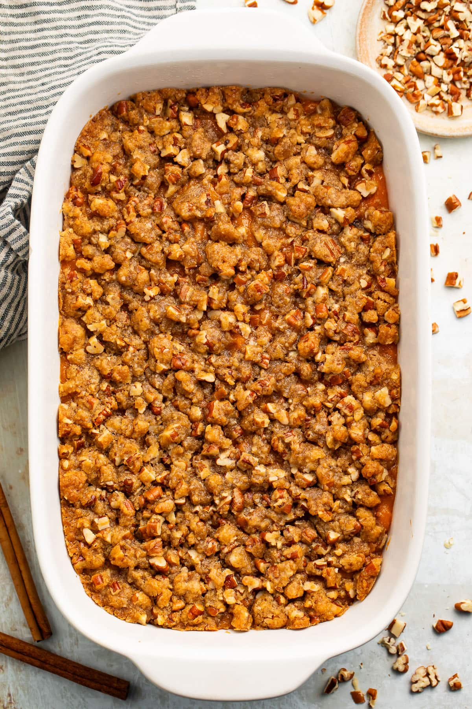

Sweet Potatoes

Crust
- 1 cup brown sugar
- 1⁄3 cup flour
- 1 cup chopped pecans
- 1⁄3 cup butter, melted
Sweet Potato Mixture
- 3 cups cooked and mashed sweet potatoes, use white colored potatoes if you can find them
- 1 cup sugar
- 1⁄2 tsp salt
- 1 tsp vanilla
- 1 egg, well beaten
- 1⁄2 cup butter, melted
Preheat oven to 375°F. Spray a medium-size casserole dish with nonstick spray.
For the Crust: Combine brown sugar, flour, nuts, and butter in mixing bowl. Chill in the fridge until ready for use. This helps the crumble maintain its from and not melt into the sweet potatoes.
Combine sweet potatoes, sugar, salt, vanilla, eggs, and butter in a large mixing bowl in the order listed. Beat thoroughly wiht a hand mixer for about 3-4 minutes to increase the fluffiness of the sweet potato mixture. Add a splash of milk if needed and mix.
Pour mixture into the baking dish (I use around a 2 quart dish). Bake for 25 minutes. At this point, dish can be covered and refrigerated for a couple of days if making ahead of time.
*If you refrigerated ahead of time make sure to reheat the potatoes again before adding the crust- around 10-20 minutes.
Sprinkle the surface of the sweet potato mixture evenly with the crust mixture and return to oven for 10-20 minutes or until crumble is browned. Allow to set at least 30 minutes before serving.
Recipe Notes:3 cups sweet potatoes is about 3-4 large sweet potatoes. To cook sweet potatoes first wash and dry them carefully then you can either: 1) Bake them at 400 degrees for 50-60 minutes (my preferred message), 2) Boil them for 30 minutes or 3) Pierce them with a fork and microwave them for about 15-20 minutes.
The size of dish will depend on how thick you want your potatoes. I like to use around a 2 quart dish. A 9x13 pan is a 3 quart dish so if you're doubling it and put it in a 9x13 it might be on the thicker side.